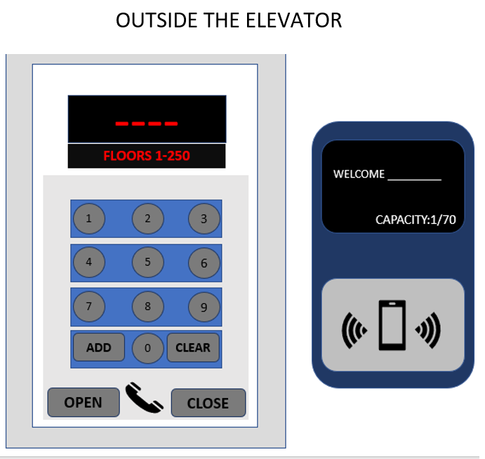

Designing an elevator which can go as high as 1000 floor is hard, by taking capacity, speed, reliability, into factor can be hard, but since this is just theoretically, I designed an elevator which can cater up to 70 people each trip.
I divided 1000 floors into 4 elevators. First elevator is from 1st to 250th, next is 250th to 500th, then 500th to 750th and lastly from 750th to 1000th floor. My designed elevator is operated by keycard for security, accessing the elevator and for observing the capacity of the elevator. For example, a person used their keycard to operate the elevator a capacity counter will count each keycard used in operating the elevator. The elevator also has a weight counter, because the capacity of the elevator isn’t exactly considering the persons: weight, and items they’re with. So even the capacity states that the capacity hasn’t reached 70 yet, but the weight counter determined that the elevator reached its limit, the keycard reader won’t accept any keycards anymore. The interface consists of numbers for inputting the desired floor, the screen also indicates which floors the certain elevator can go up to.
